Part oneImage warping and mosaicing
Register photos with homographies computed from manually clicked correspondences, warp them, and blend them into mosaics.
A.1 Shoot the pictures
Two photos are related by a homography when the camera only rotates (or zooms) about a fixed centre of projection between them. I stood in one place and rotated the phone between shots, with roughly 40–70% overlap between neighbours.
- Atrium, Marina: phone photos (5712 × 4284).
- Toronto skyline, Niagara Falls: frames of a panned phone video (1920 × 1080), taken 2 s apart (skyline: 13, 11, 9 s; falls: 9, 7, 5, 3 s). A steady pan gives evenly spaced views.
- All images are resized to a longest side of 1200 px: enough detail for clicking and matching, and fast to warp.
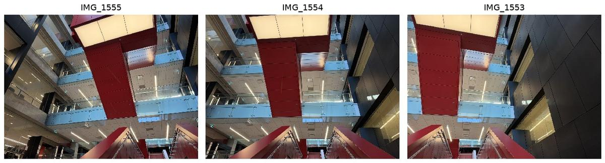
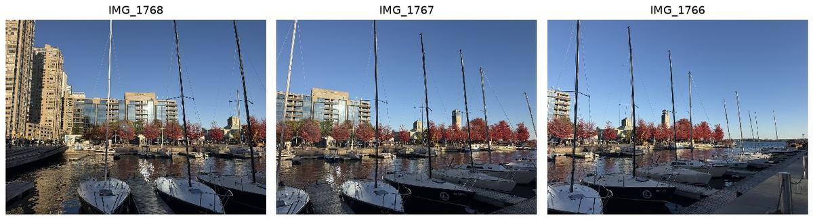
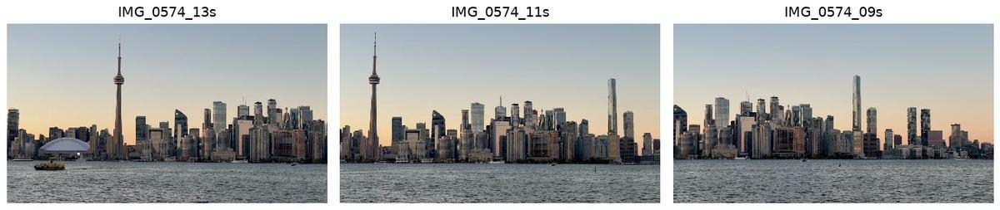
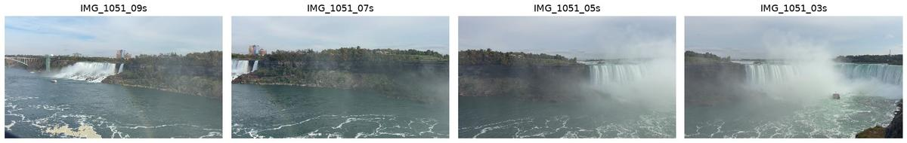
A.2 Recover homographies
A homography maps a point (x, y) of the left image to (x′, y′) in the right image, up to a scale s. Fixing h33 = 1 leaves 8 unknowns:
Multiplying by the denominator makes both equations linear in the unknowns, so each correspondence gives two rows of a linear system:
H = computeH(im1_pts, im2_pts) takes the n corresponding points of the two images, where
n is the number of correspondences (point pairs I clicked) for that image pair. im1_pts and
im2_pts are n × 2 arrays: row k holds the (x, y) of the k-th point in the left and in the right image, with
(0, 0) at the centre of the top-left pixel. Each correspondence contributes two rows, so A is 2n × 8 and b has 2n entries.
H has 8 unknowns, so n = 4 points (8 equations) is the minimum and gives an exact solution. With n > 4 the system is
overdetermined, which I solve by least squares:
computeH(im1_pts, im2_pts): # both n x 2, n >= 4
A = zeros(2n, 8), b = zeros(2n)
for k = 1 .. n:
(x, y) = im1_pts[k] # point in the left image
(x', y') = im2_pts[k] # the same point in the right image
A[2k-1] = [x, y, 1, 0, 0, 0, -x*x', -y*x'] b[2k-1] = x'
A[2k] = [0, 0, 0, x, y, 1, -x*y', -y*y'] b[2k] = y'
h = argmin_h |A h - b|^2 # least squares (np.linalg.lstsq)
return H = reshape([h, 1], 3 x 3) # append h33 = 1With exactly 4 points every click error goes straight into H. Extra points let the errors average out, so I use 6–14 points per pair.
Testing computeH on a known homography
Before trusting computeH on clicked points, I tested it on a case where the right answer is known.
Htrue below is not the homography of any of my image pairs (each real pair has its own H, listed
further down). It is a matrix I made up, with values typical of a real pair: a slight rotation and scale (top-left 2 × 2
block), a shift of about 300 px (last column) and a small perspective term (bottom row). The test:
- pick n random points (x, y) in a 1200 × 900 image;
- map them through Htrue to get their exact partners (x′, y′), optionally adding Gaussian noise with σ = 1 px to imitate click errors;
- recover H with
computeHand compare it with Htrue: the largest entry difference, and the mean distance between where the two matrices send 500 points spread over the image.
Without noise, 4 and 8 points return Htrue to floating-point precision (differences around 10⁻¹¹), so the equations and the solver are right. With 1 px of noise, the mean error over the image falls from 1.18 px with 8 points to 0.47 px with 50, which shows why more than 4 correspondences help.
| n points | noise σ (px) | max |H − H_true| / max |H_true| | mean error over the image (px) |
|---|---|---|---|
| 4 | 0 | 1.1e-11 | 0.000 |
| 8 | 0 | 2.3e-12 | 0.000 |
| 8 | 1 | 7.3e-03 | 1.180 |
| 20 | 1 | 1.2e-02 | 0.779 |
| 50 | 1 | 4.5e-03 | 0.472 |
Picking the points of my Images
I placed the correspondences with my own tool, pick_points.py. The two images are shown side by side. I
click a feature in the left image, then the same feature in the right one, and repeat. A magnified view follows the
selected point, so I can refine it with the arrow keys in steps of 1 px or 0.25 px (with Shift), or reselect and fix an
earlier point. The points are saved per pair and reused by every later step.
Choosing the features
- Sharp corners (corners of panels, windows, railings, rooflines). A corner is located precisely in both x and y; a point on a straight edge can slide along it.
- Static objects only. No water, clouds, mist or people, which move between shots.
- Spread over the whole overlap, including its top and bottom. The perspective terms h31, h32 are only determined well if the points cover a large area; points in a narrow band fit well but let H go wrong outside it.
- 6–14 points per pair. Niagara has the fewest (6–8): the frames share only a thin band of cliffs and buildings.
In the figures, rings are the clicked points. Crosses in the right image are the left points mapped through the recovered H, so the gap between a ring and its cross is the fitting error.
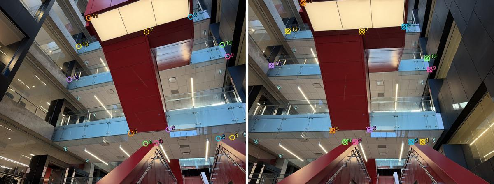
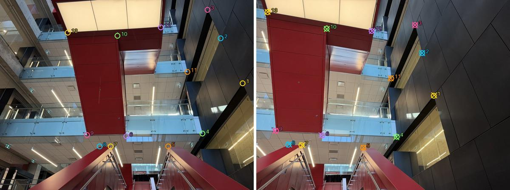
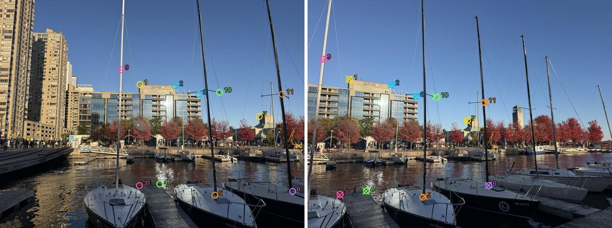
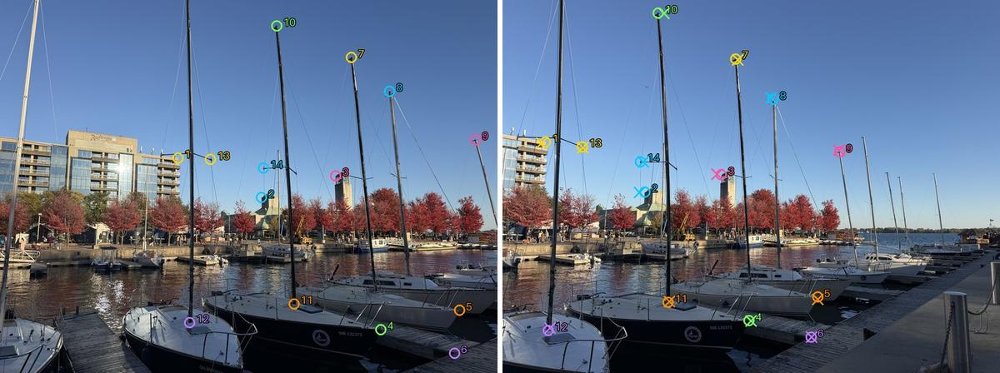
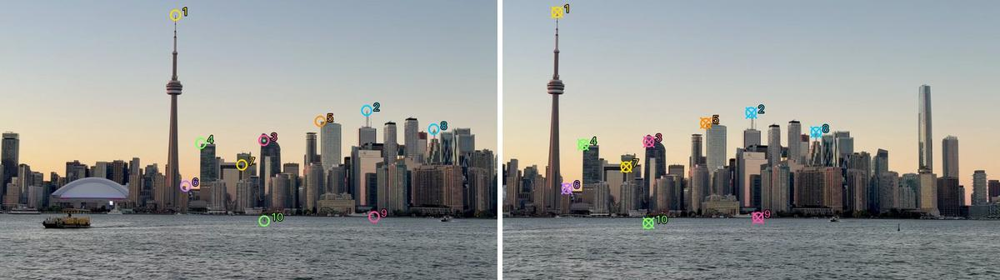
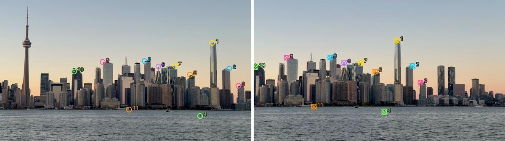
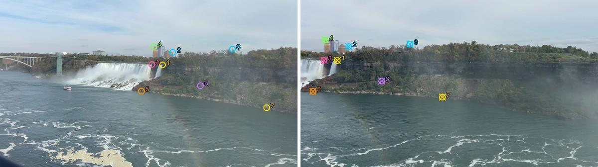
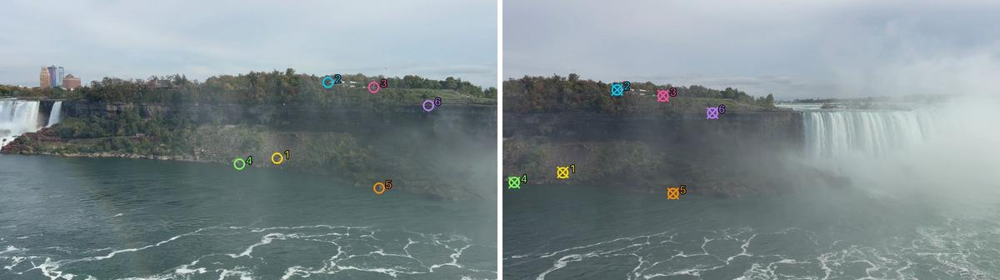
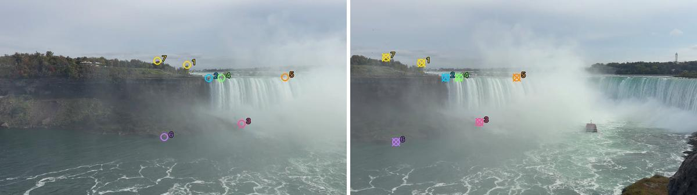
System of equations and recovered H
The full numeric system of one pair with its correspondences, the other pairs in the collapsed panel, and then the recovered H of every pair with its fitting error: the distance between each clicked right point and the left point mapped through H.
Atrium: IMG_1555 → IMG_1554: 13 correspondences give 26 equations in 8 unknowns. Point k gives rows 2k − 1 (x′) and 2k (y′).
| # | x (left) | y (left) | x′ (right) | y′ (right) | rows of A | error (px) |
|---|---|---|---|---|---|---|
| 1 | 1133.36 | 672.05 | 851.24 | 693.58 | 1, 2 | 0.30 |
| 2 | 1066.15 | 677.93 | 796.17 | 693.70 | 3, 4 | 0.81 |
| 3 | 762.26 | 700.21 | 522.31 | 693.58 | 5, 6 | 2.65 |
| 4 | 710.31 | 702.59 | 471.87 | 694.58 | 7, 8 | 2.46 |
| 5 | 639.09 | 652.02 | 411.79 | 639.63 | 9, 10 | 2.84 |
| 6 | 822.84 | 633.87 | 593.53 | 634.87 | 11, 12 | 2.92 |
| 7 | 715.57 | 156.25 | 555.10 | 155.12 | 13, 14 | 0.30 |
| 8 | 930.72 | 82.40 | 761.00 | 130.83 | 15, 16 | 1.62 |
| 9 | 1111.21 | 276.78 | 886.41 | 340.74 | 17, 18 | 0.71 |
| 10 | 1085.05 | 219.08 | 873.64 | 285.41 | 19, 20 | 1.17 |
| 11 | 433.70 | 87.03 | 267.47 | 14.06 | 21, 22 | 2.04 |
| 12 | 338.33 | 388.67 | 113.15 | 320.46 | 23, 24 | 0.44 |
| 13 | 384.51 | 226.46 | 194.76 | 152.49 | 25, 26 | 2.57 |
The system A h = b and H of the other 8 pairs
Atrium: IMG_1554 → IMG_1553
13 correspondences, 26 equations.
Marina: IMG_1768 → IMG_1767
11 correspondences, 22 equations.
Marina: IMG_1767 → IMG_1766
14 correspondences, 28 equations.
Toronto skyline: IMG_0574_13s → IMG_0574_11s
10 correspondences, 20 equations.
Toronto skyline: IMG_0574_11s → IMG_0574_09s
11 correspondences, 22 equations.
Niagara Falls: IMG_1051_09s → IMG_1051_07s
8 correspondences, 16 equations.
Niagara Falls: IMG_1051_07s → IMG_1051_05s
6 correspondences, 12 equations.
Niagara Falls: IMG_1051_05s → IMG_1051_03s
7 correspondences, 14 equations.
| Pair | n | mean error (px) | max error (px) | H |
|---|---|---|---|---|
| Atrium: IMG_1555 → IMG_1554 | 13 | 1.60 | 2.92 | \(\begin{bmatrix}1.3951 & -0.1629 & -281.37 \\ 0.3233 & 1.2425 & -232.03 \\ 3.38\times10^{-4} & 2.21\times10^{-5} & 1\end{bmatrix}\) |
| Atrium: IMG_1554 → IMG_1553 | 13 | 2.38 | 3.95 | \(\begin{bmatrix}1.5218 & -0.1986 & -395.60 \\ 0.3768 & 1.2842 & -255.49 \\ 4.62\times10^{-4} & -4.47\times10^{-5} & 1\end{bmatrix}\) |
| Marina: IMG_1768 → IMG_1767 | 11 | 4.10 | 8.25 | \(\begin{bmatrix}2.0677 & -0.1308 & -853.12 \\ 0.5038 & 1.6714 & -371.43 \\ 9.05\times10^{-4} & -4.32\times10^{-5} & 1\end{bmatrix}\) |
| Marina: IMG_1767 → IMG_1766 | 14 | 6.96 | 13.85 | \(\begin{bmatrix}1.6560 & -0.0474 & -575.51 \\ 0.3059 & 1.4349 & -249.85 \\ 5.22\times10^{-4} & 4.24\times10^{-5} & 1\end{bmatrix}\) |
| Toronto skyline: IMG_0574_13s → IMG_0574_11s | 10 | 0.55 | 1.17 | \(\begin{bmatrix}1.1210 & -5.35\times10^{-3} & -336.39 \\ 0.0391 & 1.0762 & -25.09 \\ 9.93\times10^{-5} & 3.22\times10^{-6} & 1\end{bmatrix}\) |
| Toronto skyline: IMG_0574_11s → IMG_0574_09s | 11 | 0.38 | 0.76 | \(\begin{bmatrix}1.1577 & -4.45\times10^{-3} & -398.81 \\ 0.0516 & 1.1131 & -60.74 \\ 1.27\times10^{-4} & 1.82\times10^{-5} & 1\end{bmatrix}\) |
| Niagara Falls: IMG_1051_09s → IMG_1051_07s | 8 | 0.49 | 0.90 | \(\begin{bmatrix}2.1124 & 0.1450 & -1180.83 \\ 0.1947 & 1.8044 & -204.73 \\ 9.24\times10^{-4} & 4.95\times10^{-5} & 1\end{bmatrix}\) |
| Niagara Falls: IMG_1051_07s → IMG_1051_05s | 6 | 0.54 | 0.87 | \(\begin{bmatrix}2.1045 & 0.0672 & -1198.28 \\ 0.2516 & 1.7688 & -174.61 \\ 9.47\times10^{-4} & -6.25\times10^{-5} & 1\end{bmatrix}\) |
| Niagara Falls: IMG_1051_05s → IMG_1051_03s | 7 | 1.05 | 2.50 | \(\begin{bmatrix}1.8760 & 0.0155 & -850.92 \\ 0.2282 & 1.5513 & -171.90 \\ 7.63\times10^{-4} & -4.64\times10^{-5} & 1\end{bmatrix}\) |
Reading the results
- What the error means. It is the distance between each clicked right point and its left partner mapped through H. A small error says the clicks agree with a single homography; it does not prove that H is right far away from the clicked points.
- Toronto skyline: 0.38–0.55 px mean. Everything is far away, so the views differ by an almost pure camera rotation, the case a homography models exactly. Its H is close to "identity plus a shift": h11, h22 ≈ 1.1, h12, h21 ≤ 0.05, and h13 ≈ −340 to −400 px, the horizontal pan between frames.
- Niagara Falls: 0.49–1.05 px mean, with only 6–8 points. 12–16 equations for 8 unknowns leave little redundancy, so a low error is partly guaranteed by the few points. They also lie in a thin horizontal band, so h31 and h32 are weakly constrained. This is one reason the uncut Niagara canvas is far larger with the clicked H than with the automatic one (B.4).
- Atrium: 1.60–2.38 px mean. The structures are only a few metres away, so a small movement of the phone between shots already shifts them relative to each other (parallax). Lens distortion near the image edges may add a little, since a homography cannot model it.
- Marina: 4.10–6.96 px mean, up to 13.85 px. The points range from docks a few metres away to buildings across the harbour. Any shift of the camera centre moves near and far points by different amounts, and no single H fits both.
- The perspective terms. h31 and h32 are small (h31 ≈ 1 × 10⁻⁴ for the skyline, up to 9 × 10⁻⁴ for the marina and Niagara), but they multiply x and y, which reach 1200 px. Across the image the denominator w = h31 x + h32 y + 1 changes by 12–114%, which is the perspective (keystone) part of the warp. For a pure rotation h31 is roughly sin θ / f, so it grows when the camera turns further between shots or the lens is wider.
A.3 Warp the images
Inverse warping
For every output pixel (x′, y′), H−1 gives the position (xs, ys) in the source image I that it comes from, and I is sampled there. Unlike pushing source pixels forward with H, this fills every output pixel, so there are no holes.
(xs, ys) usually falls between pixels, so it is interpolated (pixel (row i, column j) sits at (x, y) = (j, i)):
- Nearest neighbour: take the closest pixel.
- Bilinear: weight the 4 surrounding pixels by distance, with j = ⌊xs⌋, i = ⌊ys⌋, a = xs − j, b = ys − i.
warpImageNearestNeighbor(im, H) and warpImageBilinear(im, H) differ only in that step. The
output is the bounding box of the 4 warped image corners; pixels in it with no source get alpha 0 (black). Both are
numpy only (no cv2.warpPerspective, skimage.transform.warp or griddata).
warpImage(im, H): # im: rows x cols (x 3), H: 3 x 3
corners = H * (0, 0), (cols-1, 0), (cols-1, rows-1), (0, rows-1), each divided by its w
box = bounding box of corners, rounded outwards # the output size (staff tip)
for every output pixel centre (x', y') in box: # all at once (numpy meshgrid)
(u, v, w) = inverse(H) * (x', y', 1)
(xs, ys) = (u / w, v / w) # where it comes from in im
if (xs, ys) lies inside im:
out[y', x'] = interpolate(im, xs, ys) # nearest neighbour or bilinear
alpha[y', x'] = 1
else:
alpha[y', x'] = 0 # no data: shown black
return out, alphaRectification
With one photo, the second set of points comes from knowing that the painting or poster is a rectangle. I click its 4
corners p1–p4 (any order; sorted into top-left, top-right, bottom-right, bottom-left) and map them
to a rectangle q1–q4 with computeH. With n = 4 the solution is exact.
- Height hr: the mean of the clicked left and right sides, so the object keeps about its size in the photo.
- Aspect ratio r: the real one when known (Almond Blossom, 73.3 × 92.4 cm: r = 1.261), otherwise estimated from the clicked sides (Renoir 1.105, poster 0.888), which is only approximate.
- Crop: the rectangle plus 60% of its size on each side; uncropped, the far side of the wall stretches towards infinity.
Each result shows the photo with the clicked corners, both interpolations, and a 3× zoom of the rectangle's centre.
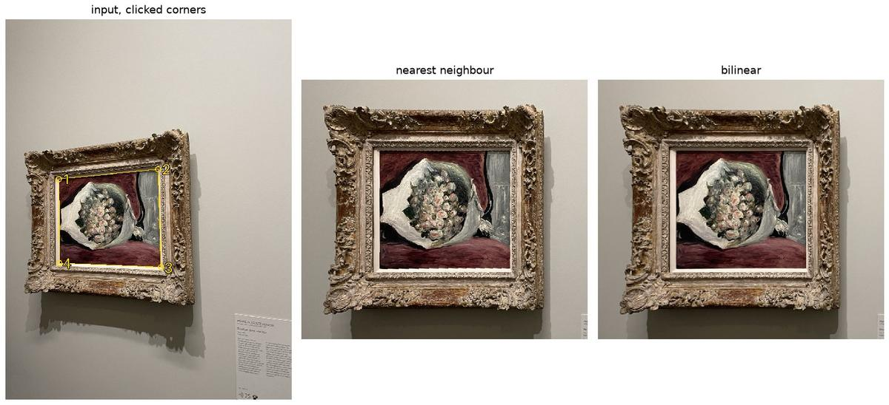
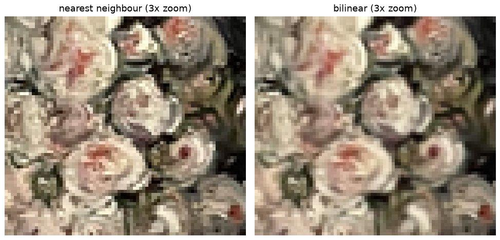
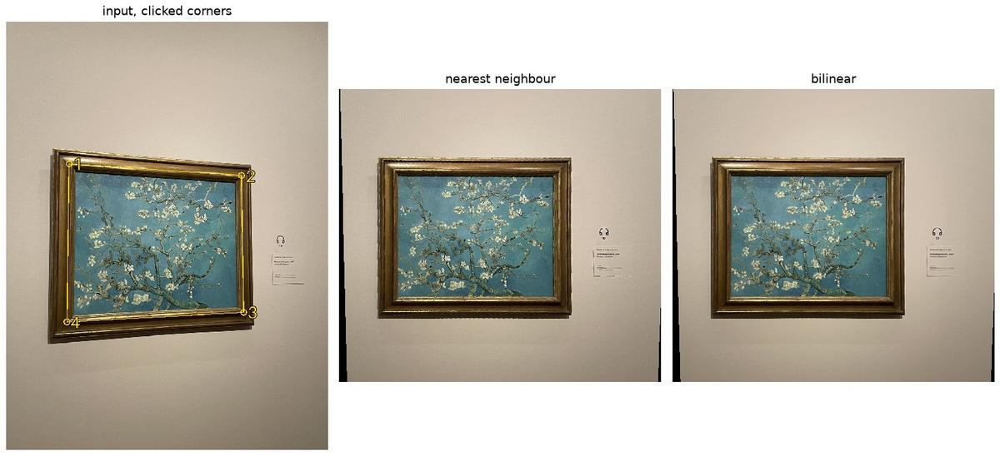
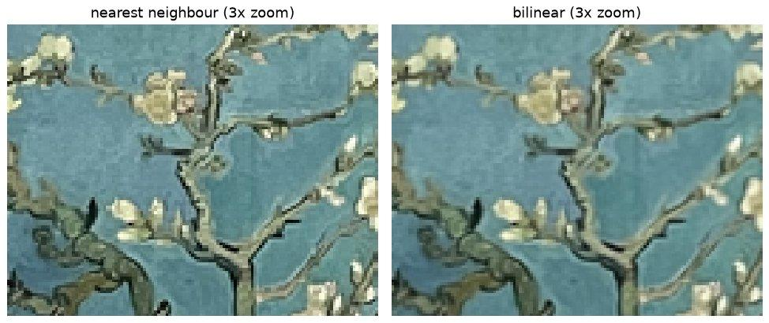
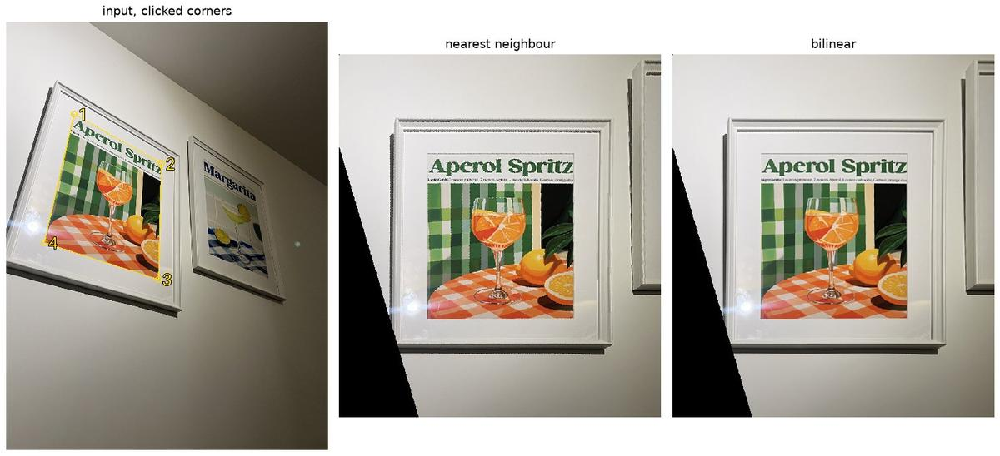
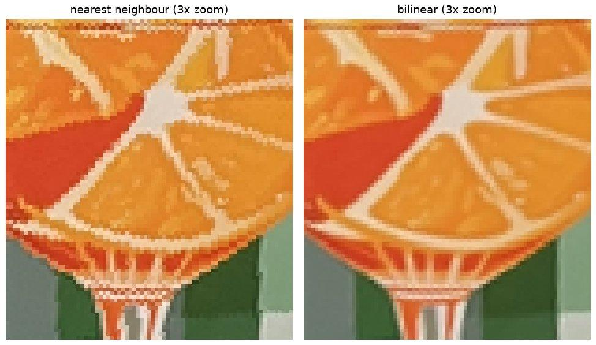
Nearest neighbour vs. bilinear
| Image | Output (w × h) | Nearest neighbour | Bilinear | Bilinear / NN |
|---|---|---|---|---|
| Renoir painting | 696 × 633 | 15 ms | 40 ms | 2.6× |
| Van Gogh, Almond Blossom | 999 × 910 | 35 ms | 85 ms | 2.4× |
| Cocktail posters | 678 × 765 | 20 ms | 48 ms | 2.4× |
Reading the results
- The rectangles come out rectangular. In all three photos, the clicked painting or poster is face-on with parallel sides and right angles. Everything else on the same wall is rectified with it: the Margarita poster at the right edge of the poster result becomes rectangular too, without being clicked.
- Only the plane is corrected. A homography is exact only for points on the wall's plane. Parts that stick out of it, such as the thickness of the Renoir's carved frame, are still seen from the side.
- The aspect ratio is only as good as its source. Almond Blossom uses the canvas's real shape. For the Renoir and the poster, the estimated ratio can be off by a few percent, which would make the result slightly too wide or too narrow, though still rectangular.
- Quality. Nearest neighbour copies one source pixel per output pixel. Where the warp enlarges the image (the far side of the wall), it repeats pixels and the result looks blocky; slanted edges become staircases (frame edges, poster lettering, branches in the zooms). Bilinear averages the 4 neighbours, so edges and gradients stay smooth, at the cost of slight blur. Neither can restore detail that the far side of the plane never had in the photo.
- Speed. Both warps do the same inverse mapping. Nearest neighbour then reads 1 source pixel per output pixel, bilinear reads 4 and computes the weights, which makes it about 2.5× slower (table). Both take well under 0.1 s per image, because all pixels are processed at once with numpy.
- Trade-off. The difference in quality is visible, while the difference in time is a few tens of milliseconds, so I use bilinear for all mosaics. Nearest neighbour is the right choice only when speed matters more than appearance, or when values must not be mixed (e.g. warping a label or mask image).
A.4 Blend the images into a mosaic
The middle image of each set is the reference: it stays unwarped and the others are warped into its plane, then blended.
- Homographies to the reference r. A.2 gives Hi from image i to image i + 1; chaining them maps every image to r: Hr−1 ⋯ Hi for images left of r, (Hi−1 ⋯ Hr)−1 for images right of it. The middle image as reference keeps every image's rotation from it, and so the stretching, smallest.
- Canvas. The union of the warped bounding boxes of all images. Each image is warped into it (bilinear), giving one aligned layer per image.
- Weights. Each image gets a weight wi that is 1 at its centre and falls linearly to 0 at its edges (the PDF's suggestion), warped along with the image, so border pixels count less in the overlaps.
- Blending (2-band). Each layer Ii is split into a low band Li (Gaussian blur, σ = 6 px) and a detail band Di = Ii − Li. The low bands are averaged with the weights, which hides exposure differences. The detail at each pixel comes from the single image k with the largest weight, so edges are never averaged with a misaligned copy.
- Why not simpler blending? Overwriting (pasting one image over another) leaves hard seams; feathering (Σ wiIi / Σ wi) removes them but averages slightly misaligned edges into ghosts. The seam figure of each set compares all three.
- σ = 6 px is a choice: larger than the remaining misalignment (a few px), so misalignment stays in the detail band, but small enough that the averaged low band holds no sharp edges.
- Wide pans. A plane cannot hold views rotated 90° or more from the reference (they map to infinity). Niagara comes close, so its canvas is cut to the reference image ± 1.5× its size; a cylindrical projection would avoid this.
| Mosaic | Images | Reference | Canvas (w × h) | Warp + blend |
|---|---|---|---|---|
| Atrium | 3 | IMG_1554 | 2206 × 1198 | 1.21 s |
| Marina | 3 | IMG_1767 | 2833 × 1550 | 1.96 s |
| Toronto skyline | 3 | IMG_0574_11s | 1949 × 744 | 698 ms |
| Niagara Falls | 4 | IMG_1051_07s | 4182 × 2700 | 5.56 s |
Atrium
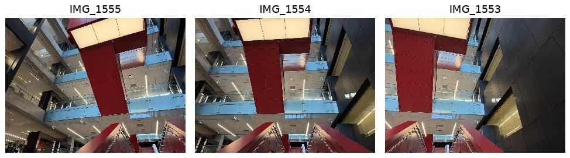
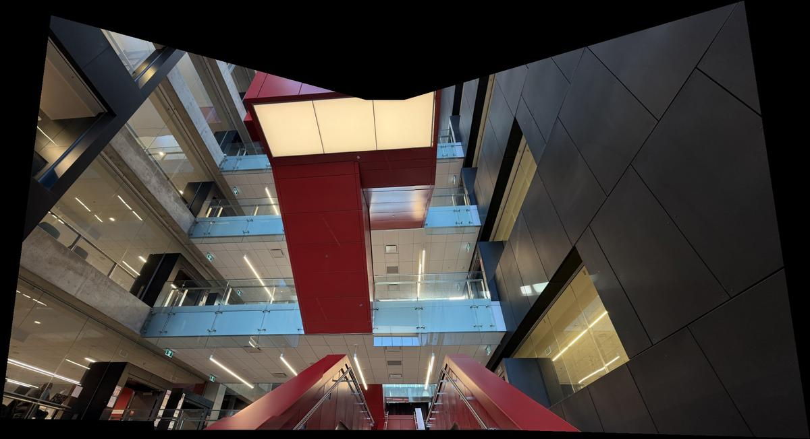
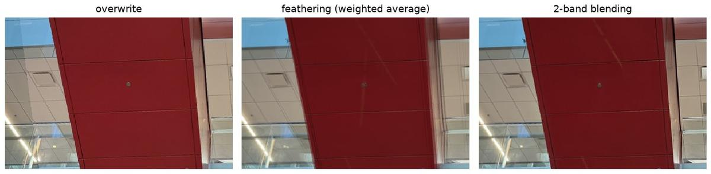
Each image warped onto the canvas, with its weight
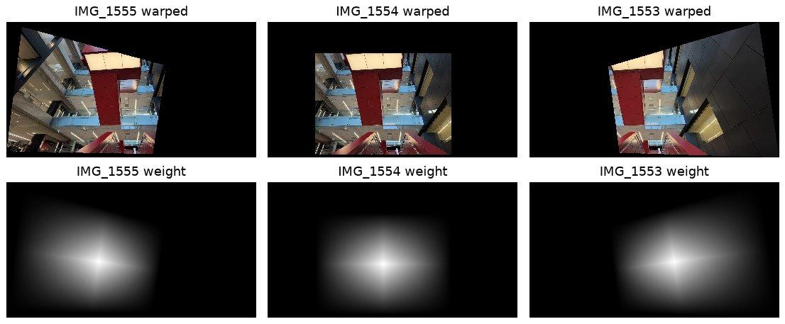
Marina
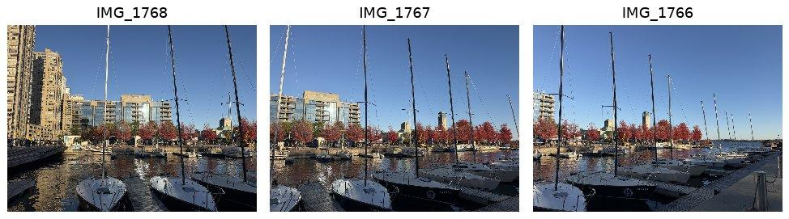
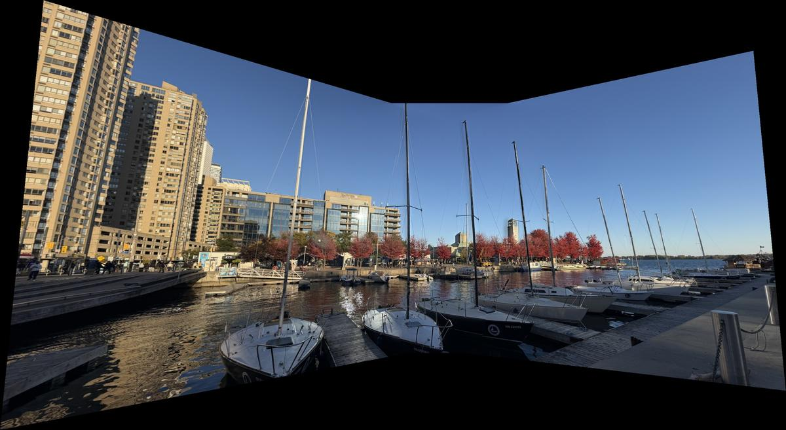
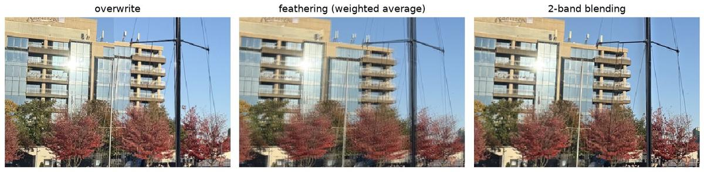
Each image warped onto the canvas, with its weight
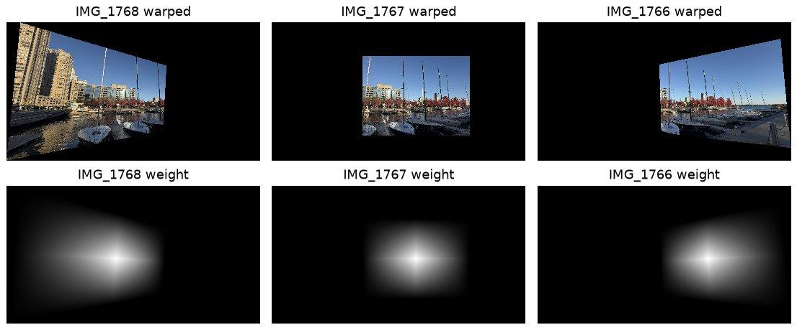
Toronto skyline
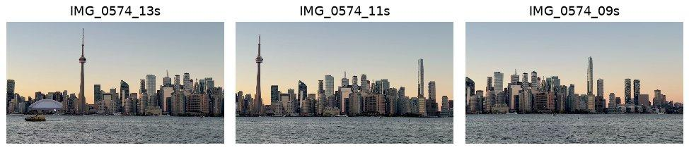
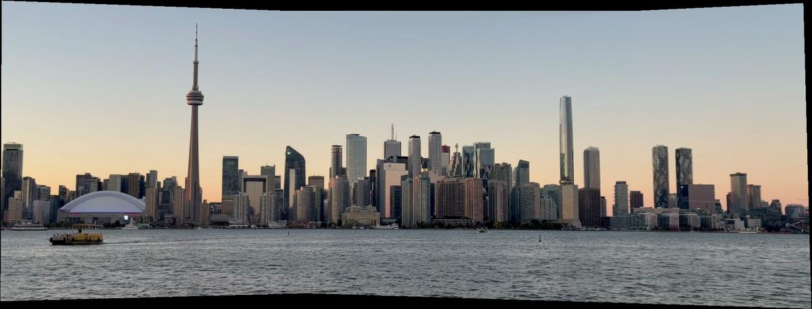
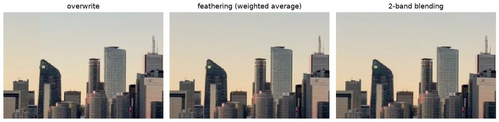
Each image warped onto the canvas, with its weight
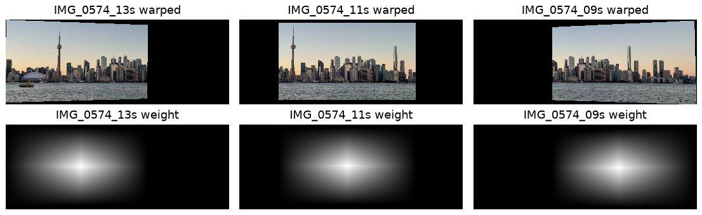
Niagara Falls
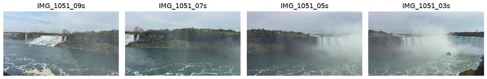
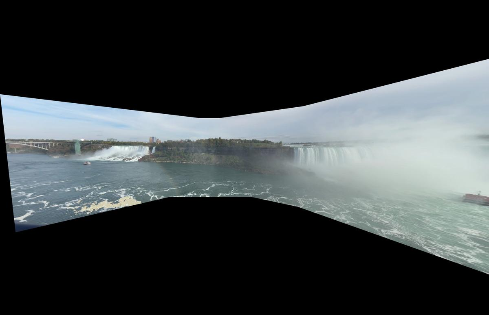
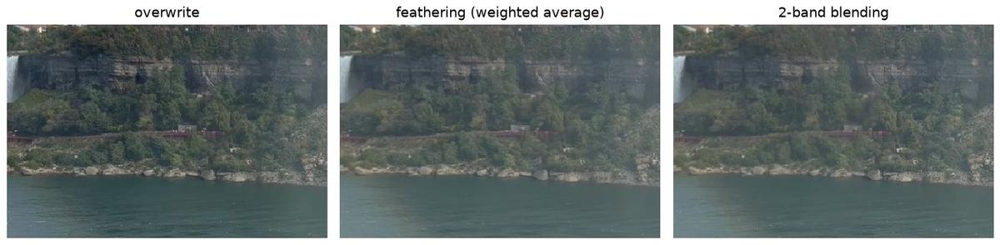
Each image warped onto the canvas, with its weight
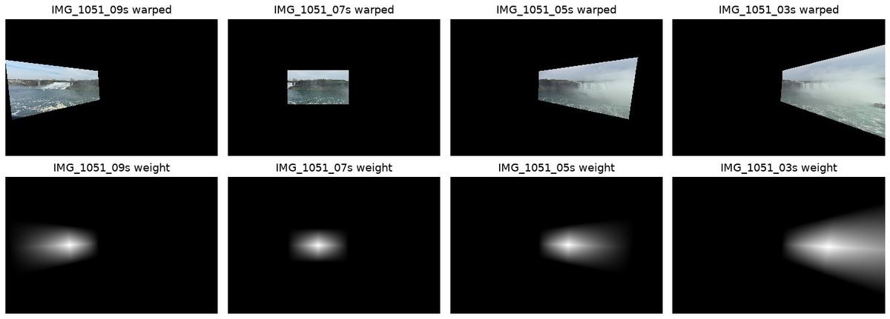
Reading the results
Blending can only hide differences that are small compared with the blur; it cannot fix misalignment. How well each method works therefore depends on how well the images line up (the A.2 errors):
- Atrium (1.6–2.4 px): a few pixels of misalignment. Overwriting leaves a hard edge and feathering a faint ghost of the misaligned lines; 2-band blending removes both, because the detail is taken from one image only.
- Marina (4–7 px, up to 14 px): all three fail. Because of parallax, near and far objects cannot both be aligned, so the overlapping images show the mast and the building in different places. Overwriting breaks them at the seam, feathering shows both copies, and 2-band blending still shows the mast twice. Only a better alignment, which a single homography cannot give for this scene, would fix it.
- Toronto skyline and Niagara Falls (0.4–1 px): all three look clean. Everything is far away, so the views differ by an almost pure camera rotation and align to within about a pixel; there is nothing to ghost. The only visible difference is a faint brightness step in the skyline's sky with overwriting, which the averaging methods smooth out.
Part twoFeature matching for autostitching
Replace the clicking with automatic correspondences, following Multi-Image Matching using Multi-Scale Oriented Patches (Brown, Szeliski and Winder, 2005) with the assignment's simplifications: one scale, no sub-pixel refinement, no rotation invariance, no wavelet indexing. The inputs are the Part 1 images, in grayscale.
B.1 Harris corners and adaptive non-maximal suppression
Harris interest points
The provided harris.py (Section 2 of the paper) computes, at every pixel, the second-moment matrix M of the
image gradients and the corner strength f:
f is large only when both eigenvalues λ1, λ2 are large, i.e. the intensity changes in every
direction: a corner, not an edge (one large eigenvalue) or a flat region (none). harris.py uses σ = 1, keeps
every local maximum of f, and drops corners within 20 px of the border, so the 40 × 40 descriptor window of B.2 always
fits.
Minimum strength. "Every local maximum" also includes tiny maxima of noise in flat regions (sky, walls): 16,000–27,000 per image. Like the paper, I keep only maxima above a minimum strength, f > 0.01, about 1% of the strongest responses (1.2–3; chosen by inspecting the figures). This leaves 3,300–10,500 corners. Without it, ANMS prefers those isolated noise maxima: in the marina, many of its 500 corners landed in the empty sky.
Adaptive non-maximal suppression (ANMS)
The strongest corners cluster on the most textured structures. ANMS (Section 3) keeps corners that are strong and spread out. Each corner xi gets a suppression radius ri, the distance to the nearest clearly stronger corner, and the nip corners with the largest r are kept:
I use the paper's values, nip = 500 and crobust = 0.9: a neighbour must be at least ~11% stronger
to suppress a corner, so corners of nearly equal strength do not remove each other. The radii are computed in blocks of the
distance matrix (dist2 from harris.py) and match a brute-force computation on 2,000 corners.
Each figure shows, for the reference image of a set, the Harris corners (without ANMS), the 500 strongest of them, and the 500 chosen by ANMS.
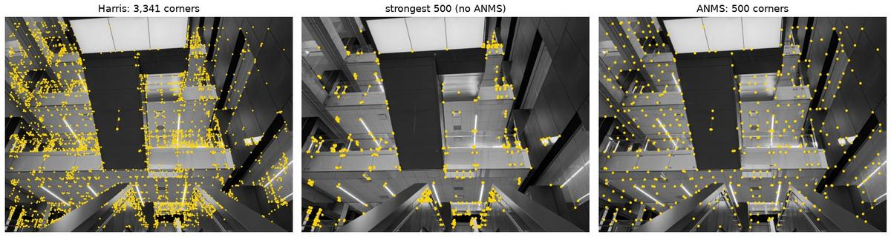
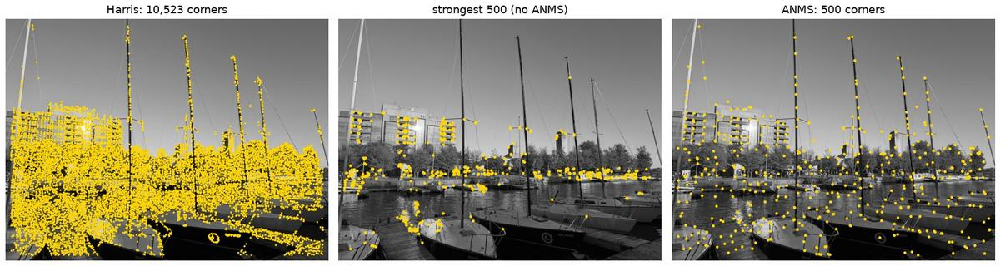
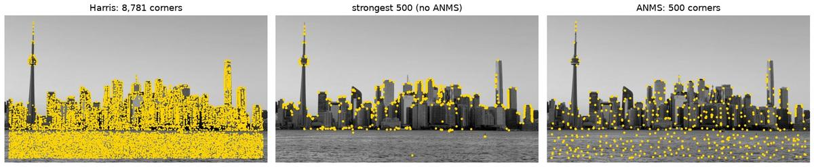
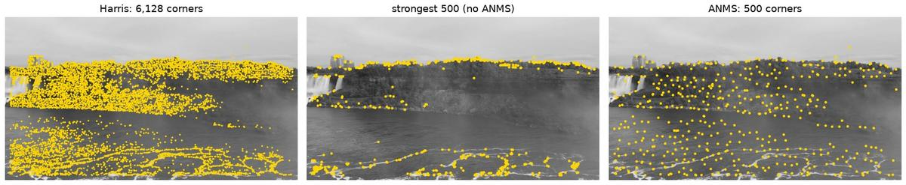
| Image | Size | Local maxima | Harris corners (f > 0.01) | After ANMS | Smallest kept radius (px) | Harris | ANMS |
|---|---|---|---|---|---|---|---|
| Atrium (IMG_1554) | 1200 × 900 | 25,792 | 3,341 | 500 | 22.1 | 43 ms | 39 ms |
| Marina (IMG_1767) | 1200 × 900 | 27,400 | 10,523 | 500 | 20.6 | 47 ms | 533 ms |
| Toronto skyline (IMG_0574_11s) | 1200 × 675 | 16,116 | 8,781 | 500 | 17.9 | 26 ms | 233 ms |
| Niagara Falls (IMG_1051_07s) | 1200 × 675 | 18,883 | 6,128 | 500 | 18.4 | 128 ms | 252 ms |
Reading the results
- Without ANMS the corners cluster. The 500 strongest sit on a few high-contrast structures: railings and light fittings in the atrium, window grids and the tree line in the marina, building edges in the skyline, the treeline and the foam at Niagara. Large parts of each image get none.
- With ANMS they cover the image. The same number of corners is spread over every textured region, so two overlapping images are much more likely to share corners, and the matches will cover more of the overlap.
- Spacing. The smallest kept radius is 18–22 px: no kept corner has a corner ≥ 11% stronger within about 20 px, roughly half a descriptor window, so neighbouring descriptors overlap little.
- Water. In the skyline and at Niagara many ANMS corners lie on waves and foam. They are genuine corners but move between frames, so they rarely find a match (B.3) and RANSAC rejects them (B.4).
- Flat regions (sky, mist, plain walls) stay empty, because of the minimum strength.
- Speed. Harris takes under 0.15 s and ANMS under 0.6 s per image (table).
B.2 Feature descriptor extraction
Each ANMS corner (x, y) is described by the image patch around it (Section 4 of the paper), axis-aligned and without the wavelet step:
- Blur the grayscale image I with a Gaussian, σ = 2.
- Sample 8 × 8 from the 40 × 40 window around the corner, one pixel every 5 px (the centre of each 5 × 5 cell):
- Bias / gain normalise the 64 values with their mean μ and standard deviation s:
- Why a large, blurred window: the descriptor barely changes if the corner is found a pixel or two off, which a sharp 8 × 8 crop would not tolerate.
- Why σ = 2: about the sample spacing / 2.5, so detail finer than a 5 × 5 cell is averaged away instead of aliasing (the paper samples from a coarser pyramid level for the same reason).
- Why normalise: it removes differences in brightness (bias, μ) and contrast (gain, s) between the photos.
Each figure shows 8 features of the reference image, spread over the ANMS ranking: the window outlined on the image, the 40 × 40 window, and its normalised 8 × 8 descriptor.
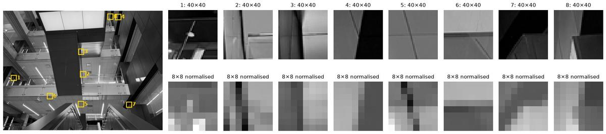
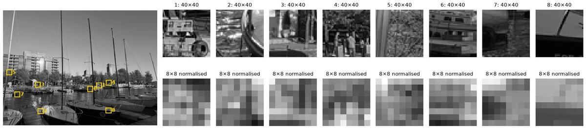
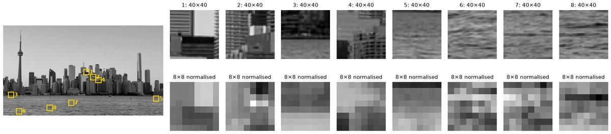
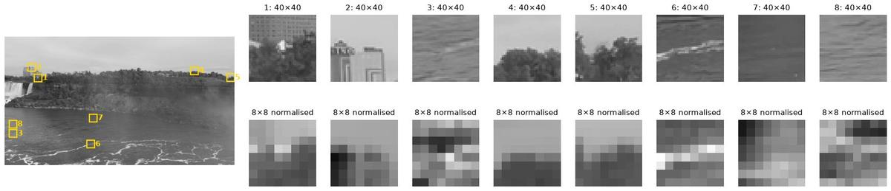
Reading the results
- A descriptor is a coarse thumbnail of its window. The dominant structure survives (an L-shaped corner, an edge, a bright/dark split); fine texture is gone.
- Normalisation stretches every descriptor to full contrast. A window of faint texture (water, a plain panel) therefore looks as strong as a real corner, but its pattern is mostly noise and changes between frames, so it will not match reliably.
- Distinctive vs. repeated structure. Corners of unique structures (a window corner, a frame corner) give distinctive patterns. Corners on repeated structures (window grids, railings) give descriptors that look alike, which makes their matches ambiguous; the ratio test in B.3 is designed to reject those.
B.3 Feature matching
Every descriptor of the left image is compared with every descriptor of the right image by Euclidean distance (Section 5 of the paper). Every feature has a nearest neighbour, even one that is not in the other image, so a match is kept only if the nearest neighbour is clearly better than the second nearest (Lowe's ratio test):
A correct match is distinctive (one close neighbour, ratio well below 1); a wrong one is about as close to several features (ratio near 1).
Choosing the threshold. Figure 6b of the paper shows exactly this: correct matches spread over low ratios, incorrect ones concentrated near 1. I measured the same two distributions on my images, labelling a nearest neighbour correct if it lies within 8 px of where the clicked H from Part 1 maps the feature. At 0.6 the test keeps 50% of the correct nearest neighbours and only 3% of the incorrect ones. A higher threshold admits incorrect matches quickly (their curve rises steeply above ~0.8); a lower one throws away correct matches that RANSAC could use.
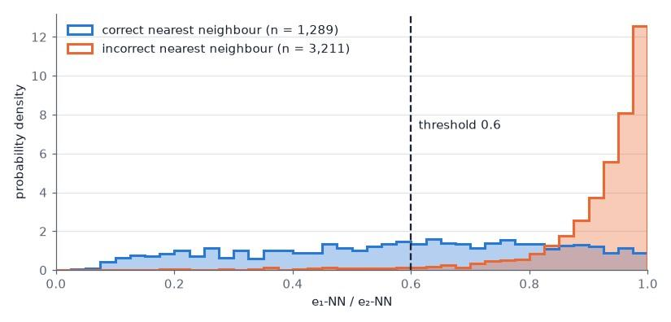
| Pair | ANMS features | Correct nearest neighbours | Matches (ratio < 0.6) | Correct among matches | Correct among rejected |
|---|---|---|---|---|---|
| Atrium: IMG_1555 → IMG_1554 | 500 | 244 | 86 | 86% | 41% |
| Atrium: IMG_1554 → IMG_1553 | 500 | 187 | 93 | 87% | 26% |
| Marina: IMG_1768 → IMG_1767 | 500 | 119 | 57 | 89% | 15% |
| Marina: IMG_1767 → IMG_1766 | 500 | 119 | 81 | 63% | 16% |
| Toronto skyline: IMG_0574_13s → IMG_0574_11s | 500 | 193 | 162 | 96% | 11% |
| Toronto skyline: IMG_0574_11s → IMG_0574_09s | 500 | 172 | 143 | 94% | 11% |
| Niagara Falls: IMG_1051_09s → IMG_1051_07s | 500 | 108 | 58 | 95% | 12% |
| Niagara Falls: IMG_1051_07s → IMG_1051_05s | 500 | 84 | 20 | 90% | 14% |
| Niagara Falls: IMG_1051_05s → IMG_1051_03s | 500 | 63 | 26 | 73% | 9% |
Each figure joins a matched feature in the left image to its partner in the right image (one colour per match).
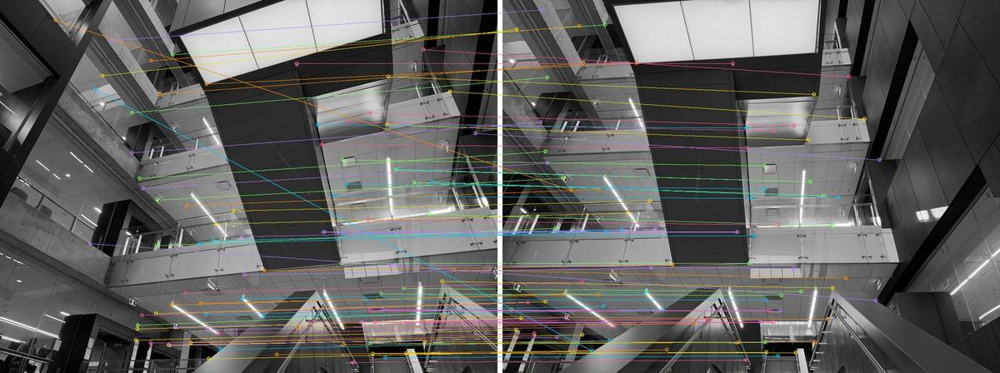
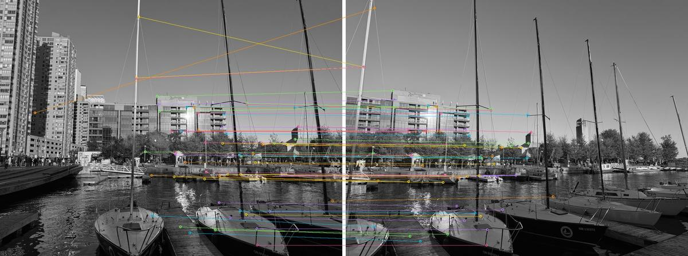
Matches of the other pairs
Reading the results
- The test removes most wrong matches. Per pair, 13–49% of all nearest neighbours are correct, against 63–96% of the matches that pass.
- Parallel lines are correct matches (the consistent shift between the views); crossing lines are wrong matches that passed. RANSAC removes them in B.4.
- Fewest matches at Niagara (20–58 per pair): much of the overlap is moving water and mist.
- Lowest precision in the marina's second pair (63%). Its labels come from a clicked H that is itself 4–7 px off (parallax, A.2), so some correct matches are counted as wrong.
B.4 RANSAC for a robust homography
Least squares gives every match the same weight, so a few wrong matches can pull H far off. 4-point RANSAC instead finds the largest set of matches that agree on one H:
- Sample 4 random matches and compute the exact H through them (
computeH). - Count inliers: the matches that this H maps to within ε = 3 px of their partner.
- Repeat 2,000 times and keep the largest inlier set.
- Refit H by least squares on all its inliers.
- ε = 3 px: at 2 px, correct-looking matches near the edges of the atrium images were rejected (probably lens distortion); a wrong match usually lands much farther away.
- 2,000 iterations: the worst pair has 60% inliers, so a sample of 4 is all inliers with probability 0.64 ≈ 0.13, and 2,000 samples all miss with probability 0.872000 < 10−100.
Per pair: the matches from B.3, the inliers of the final (refitted) H, their fraction, and the median distance between an inlier's partner and where H maps it. In the figures, green lines are inliers and red lines outliers.
| Pair | Matches | Final inliers | Inlier fraction | Median inlier error (px) |
|---|---|---|---|---|
| Atrium: IMG_1555 → IMG_1554 | 86 | 65 | 76% | 1.31 |
| Atrium: IMG_1554 → IMG_1553 | 93 | 66 | 71% | 1.37 |
| Marina: IMG_1768 → IMG_1767 | 57 | 37 | 65% | 0.89 |
| Marina: IMG_1767 → IMG_1766 | 81 | 49 | 60% | 1.22 |
| Toronto skyline: IMG_0574_13s → IMG_0574_11s | 162 | 155 | 96% | 0.59 |
| Toronto skyline: IMG_0574_11s → IMG_0574_09s | 143 | 131 | 92% | 0.60 |
| Niagara Falls: IMG_1051_09s → IMG_1051_07s | 58 | 53 | 91% | 0.71 |
| Niagara Falls: IMG_1051_07s → IMG_1051_05s | 20 | 18 | 90% | 0.57 |
| Niagara Falls: IMG_1051_05s → IMG_1051_03s | 26 | 21 | 81% | 0.67 |
Inliers and outliers of the other pairs
Manual vs. automatic mosaics
The automatic mosaics use the A.4 procedure unchanged, with the RANSAC homographies instead of the clicked ones.
Atrium
Marina
Toronto skyline
Niagara Falls
Reading the results
- Why the inlier fraction varies. It is highest for the skyline, where every match lies on rigid, distant buildings. Niagara loses some matches on moving water and mist. The atrium and the marina lose the most: their matches lie at very different depths close to the camera, so parallax moves them differently between shots. Matches that cannot agree with a single H are rejected by RANSAC.
- Why the inlier error is small everywhere. RANSAC keeps only matches that one H explains, and the refit is least squares on exactly those, so the inliers always fit well. A small error therefore shows consistency, not that the mosaic will look right.
- Toronto skyline and Niagara Falls: as good as manual. Everything is far away, so the views differ by an almost pure rotation, which a homography models exactly. Any consistent set of points gives the same alignment, clicked or automatic. At Niagara the automatic H is even better constrained: its inliers spread over more of the frame than my clicks, which were confined to a thin band, so the full canvas stretches far less.
- Atrium: worse than manual. The automatic mosaic shows a step along the bottom edge of the light panel and in the red panels below it. The scene is close (parallax), and lens distortion may bend the image edges slightly, so no H fits the whole frame exactly. RANSAC fits the largest group of agreeing matches wherever they are, while my clicks sit exactly on the panel corners that have to line up.
- Marina: both fail in the same way. Near docks and boats and distant buildings move differently between the shots (parallax), so no single H aligns both, however the points are chosen. Each H aligns the depth its points lie on, and the other depth doubles (the mast).
- Overall: without any clicking, the automatic result is already close to the manual one, and equal to it wherever a homography describes the scene. Careful clicking still wins where precision matters, because I can put each point exactly on the structure that has to line up.
Summary
- Most important thing I learned: a mosaic is only as good as its correspondences and its model. Warping and blending are mechanical once H is right; what decides the result is (1) whether a homography can describe the scene at all (pure rotation or a plane), and (2) how well the points pin H down.
- The model sets the limit. The distant skyline and falls align to about a pixel, whatever method finds the points. The marina fails with every method, because parallax breaks the homography assumption itself. Better blending (2-band) hides small misalignment, but cannot fix a wrong model.
- Where the points are matters as much as how many. Points spread over the whole overlap constrain the perspective terms; points in a thin band fit well but let H go wrong elsewhere (my Niagara clicks). A low fitting error alone does not prove a good H.
- Automatic vs. manual is a trade-off, not a winner. Corners, ANMS, the ratio test and RANSAC are each unreliable alone, but together they find enough consistent matches to stitch every set without a single click. Careful clicking is still more precise where a specific structure must line up (the atrium).
- Choices without a universal answer should be measured. Many parameters here (the ratio threshold, ε, σ, the Harris minimum strength) have no single right value. Where possible I chose them from my own data, e.g. the 0.6 ratio threshold from my version of the paper's Figure 6b, using my clicked homographies as ground truth.